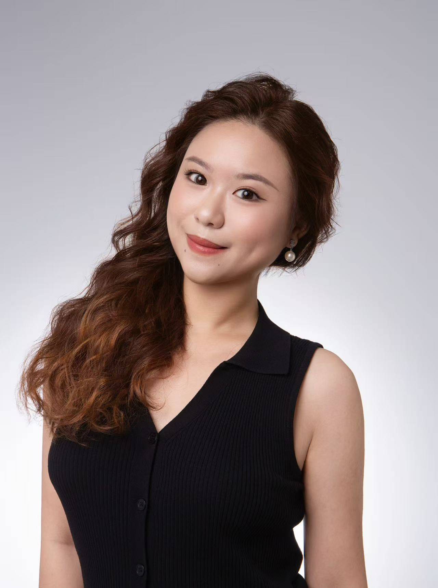

Master's candidate in AI and Digital Media at Hong Kong Baptist University (class of 2025), with strong expertise in media relations analysis, data-driven strategy, and event content development.
Gained multiple internship experiences in investor relations, financial PR, and high-end event execution. Dedicated to applying AI and big data technologies to investor relations, financial communications, and business development.
Familiar with public sentiment monitoring of A-share and Hong Kong-listed companies, financial performance writing, and media relationship management. Skilled in building IP from scratch and driving user growth.
Education · Experience · Skills
Sep 2025 – Jul 2026
Oct 2021 – Jun 2025
Jul 2024 – Sep 2024
Jul 2023 – Sep 2023
Jul 2025 – Jan 2026
Key initiatives I contributed to
As a core planning member, fully participated in creating the financial IP 'Zhenhai Talks' from positioning and content planning to multi-platform operations. Responsible for topic planning, content review, and release strategies, achieving a growth of online followers from 0 to 20,000 within 3 months, with cumulative video views exceeding 500,000, significantly enhancing Dr. Qiu Zhenhai's influence and brand recognition in the field of financial knowledge.
Led the operation of the high-end circle project "Zhenhai Club × Hongrongyuan Entrepreneurs Information Private Sharing Session." Starting from the first pilot, established a complete closed-loop service system including precise invitations, on-site services, post-event follow-up, and relationship maintenance, successfully iterating the pilot event into a monthly series of branded activities, enhancing the stickiness and repurchase willingness of entrepreneur users.
Assisted in planning and executing guest invitations for the 4th Global Digital Trade Expo, successfully coordinating several industry leaders and business decision-makers from Shenzhen and Hangzhou to attend.
Public opinion data monitoring, publicity strategy development, daily/weekly reports, writing performance articles for A-share/H-share listed companies.